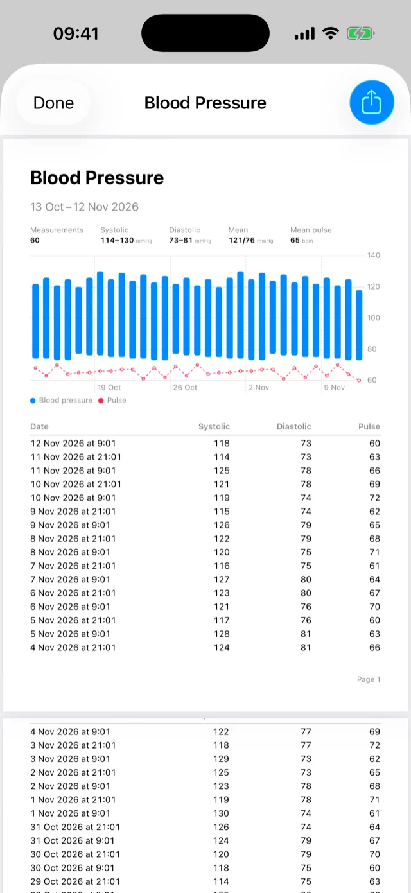
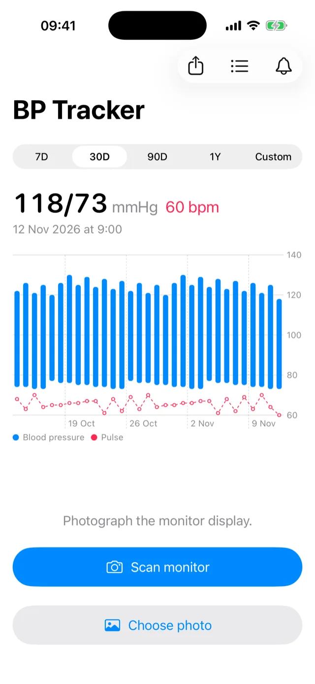
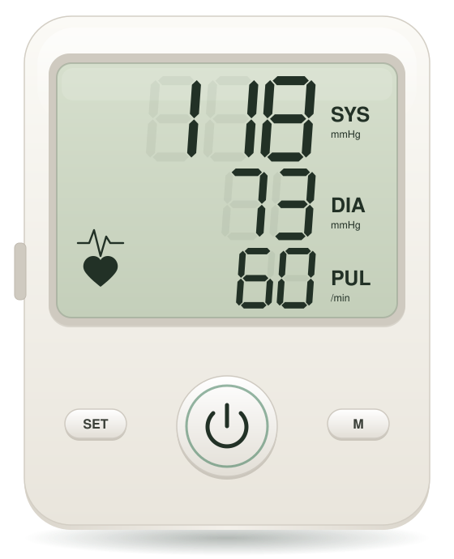
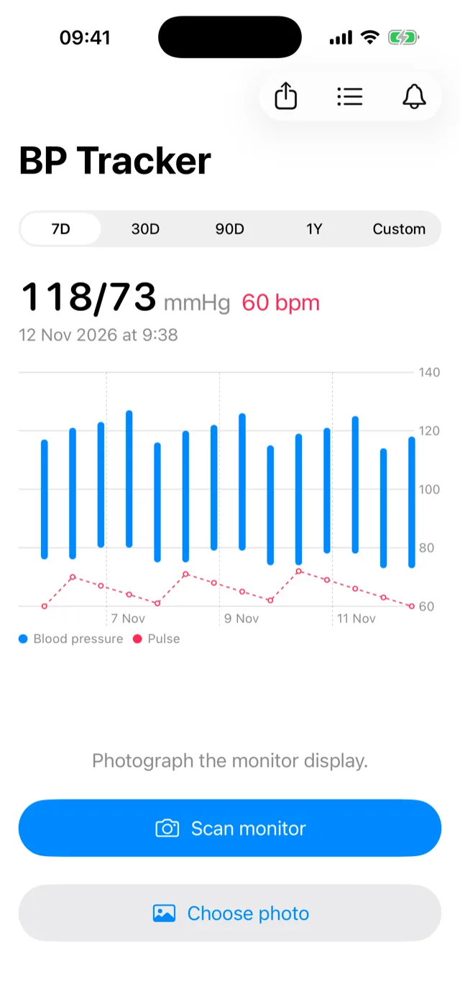
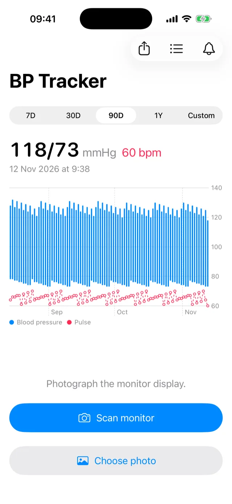
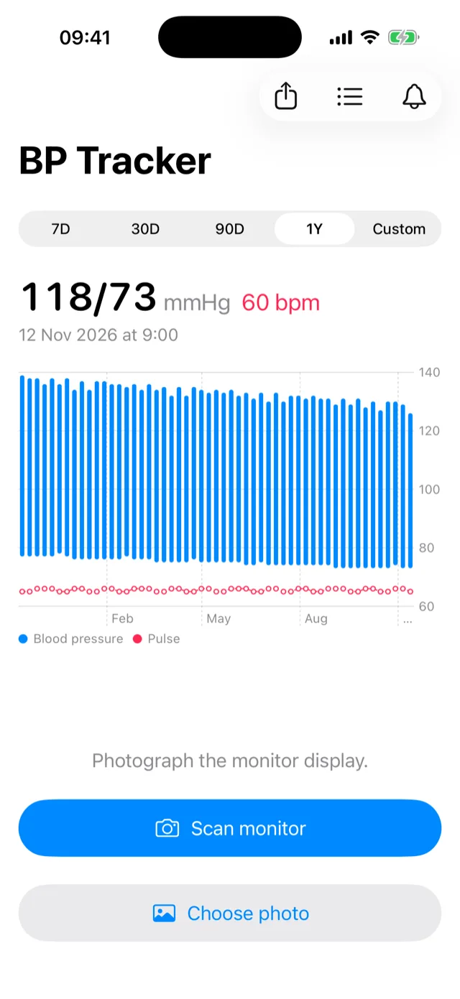
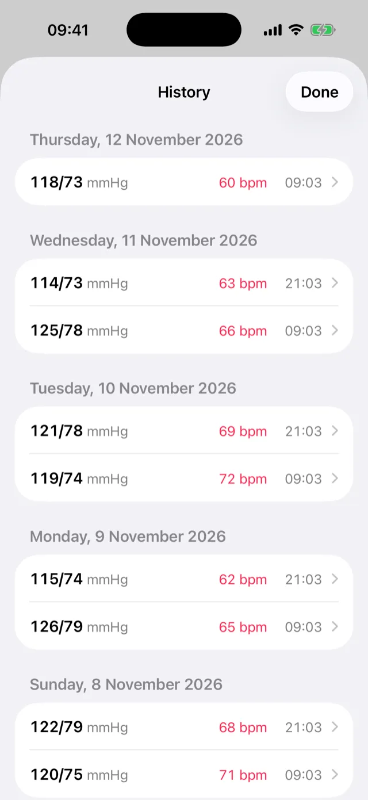
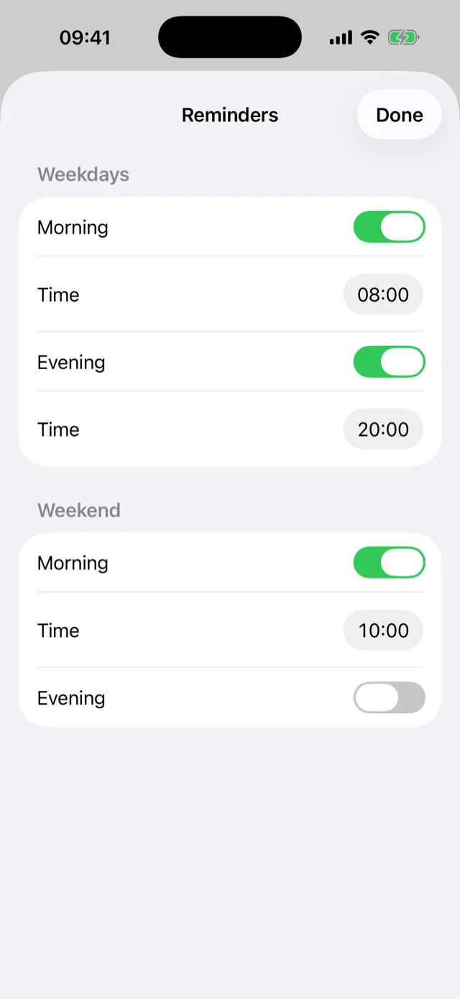

A PDF for your doctor
Summary, chart and every reading in the period you picked, shared from the app.

Systolic, diastolic and pulse read off the display and saved to Apple Health.
Free. iPhone with iOS 18 or later.


Bars run from diastolic to systolic, with pulse beneath, for a week, a month, 90 days, a year or any dates you pick.



Tap a reading to fix a typo, swipe left to delete it. Readings that other apps added to Health can only be changed in those apps.

Summary, chart and every reading in the period you picked, shared from the app.

Morning and evening, set separately for weekdays and weekends. Postpone one from the notification by 30 minutes or an hour.

No account, no analytics, no network requests. Readings live in Apple Health on your iPhone, and photos of the display never leave it.
iPhone with iOS 18 or later, in English, German, Russian, Spanish and Chinese. Works with home monitors that show SYS, DIA and PUL on a light display.